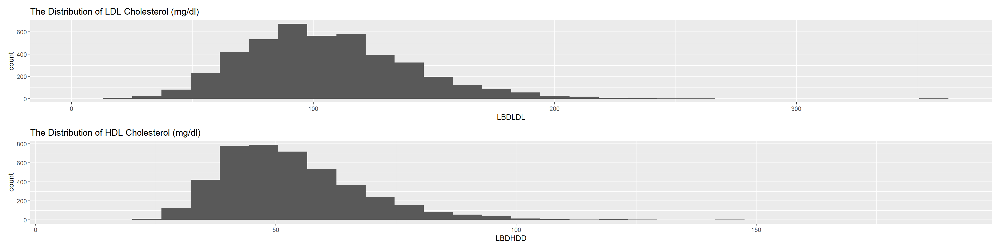
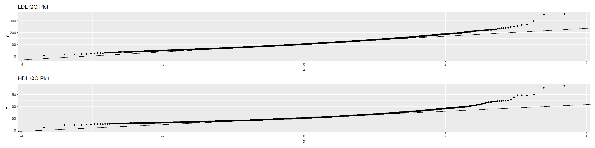
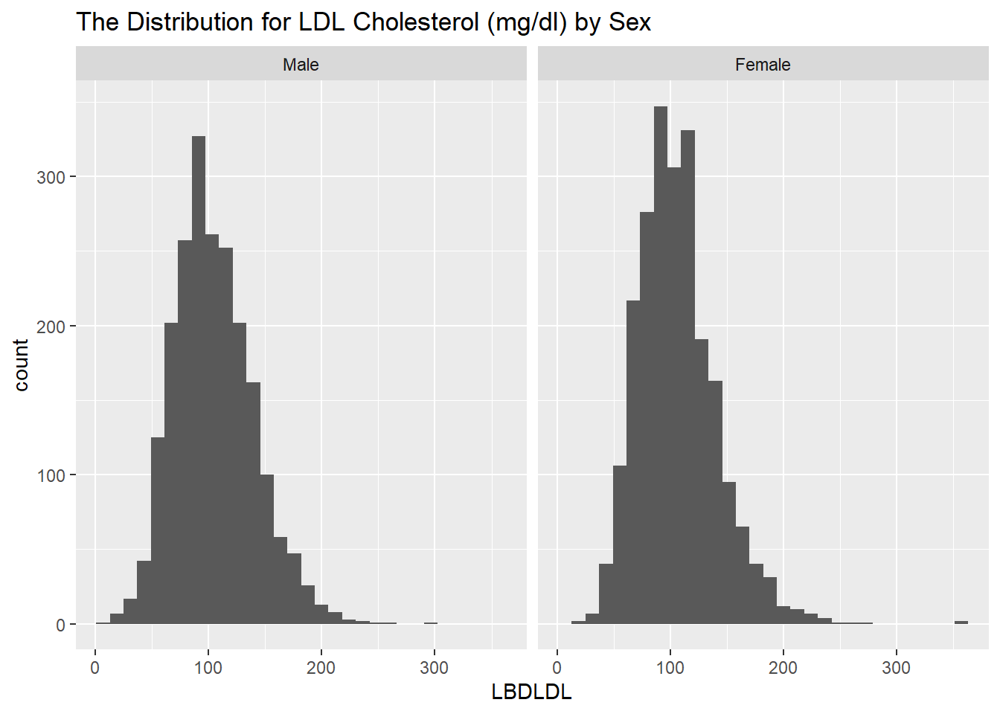
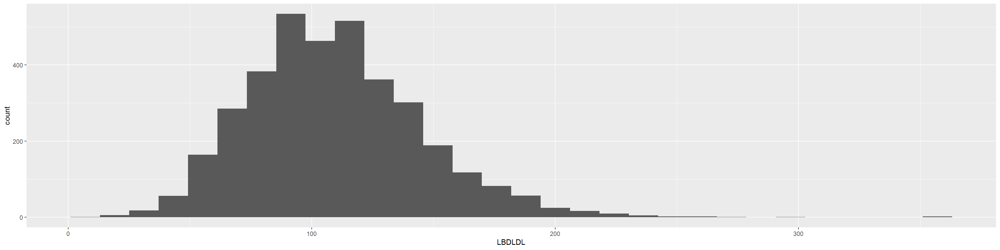
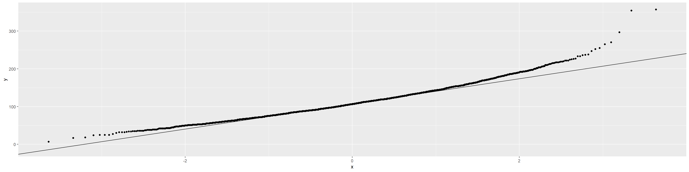
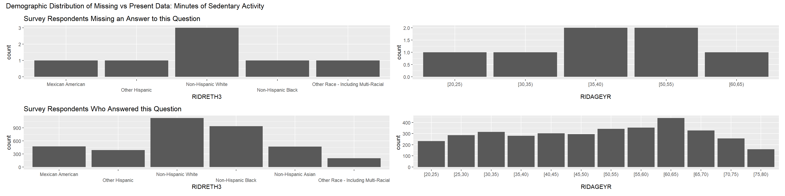
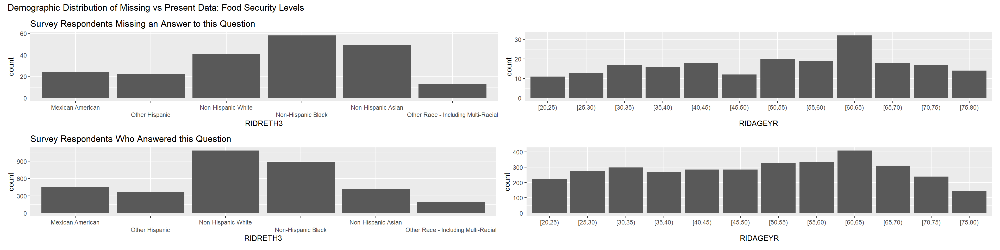
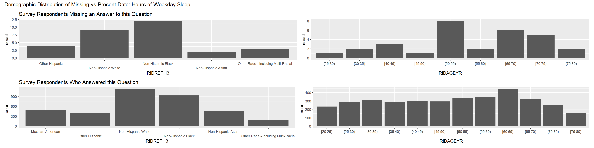

# sleep <- nhanes("P_SLQ") %>%
# tibble()
#
# demo <- nhanes("P_Demo") %>%
# tibble()
#
# chol <- nhanes("P_TRIGLY") %>%
# tibble()
# chol_hdl <- nhanes("P_HDL") %>%
#
#
# saveRDS(sleep, "./data/P_SLQ.Rds")
#
# saveRDS(demo, "./data/P_DEMO.Rds")
#
# saveRDS(chol, "./data/P_TRIGLY.Rds")
# saveRDS(chol_hdl, "./data/P_HDL.Rds")
#
# med_con <- nhanes("P_MCQ") %>%
# tibble()
#
# saveRDS(med_con, "./data/P_MCQ.Rds")
#
# food_sec <- nhanes("P_FSQ") %>%
# tibble()
#
# saveRDS(food_sec, "./data/P_FSQ.Rds")
#
# phys_acts <- nhanes("P_PAQ") %>%
# tibble()
#
#
# saveRDS(phys_acts, "./data/P_PAQ.Rds")analysis
##Variables chosen Questionnaire Sleep Disorders: P_SLQ SLD012: Sleep hours on weekdays Coding(3-13.5, 2 for <3, and 14 for greater than 13.5)
SLQ050: Ever told doctor you’ve had trouble sleeping
Medical conditions: P_MCQ MCQ300a - Close relative had heart attack?
Coding: (1: Yes, 2: No, 7: Refused (1), 9: Don’t know (216), .: Missing (5754))
Food security: P_FSQ Household food security FSDHH Coding: 1-4: (4 is the lowest), .: Missing (1084)
Coding: (1: index is 1.3, 2: 1.3 > index <= 1.85, 3: index >1.85, 7:Refused (111), 9: don’t know (482), .: Missing (1302))
Lab data LDL Cholesterol: P_TRIGLY LBDLDL : LDLD cholesterol in mg/dl
Coding: (Range of values, .: Missing (440))
HDL Cholesterol P_HDL LBDHDD: HLD in mg/dl —————————————– Physical activity: PAD680 - Minutes sedentary activity Coding: Range of values, 7777: Refused (6), 9999: Don’t know (60),.: Missing (17) —————————————– Demographics: SEQN - Respondent sequence number RIAGENDR - Gender Coding: 1/2/(.) Missing (0)
RIDAGEYR - Age in years at screening 0-79/80+/(.) Missing (0) RIDSTATR - Interview/Examination status
RIDRETH3 - Race/Hispanic origin w/ NH Asian Coding: 1/7 (7 = Other), (.) Missing (0) —————————————– Study 2 key predictors
Close relative had a heart attack (MCQ300a)
Additional predictors Race/Eth (RIDRETH3) + Age (RIDAGEYR) + Minutes of sedentary activity (PAD680) PAQ + Household food security (FSDHH) FSQ + Sleep hours on weekdays (SLD012) SLQ ———————————- Outcome LDL cholesterol (LBDLDL ) ##Setup
sleep_raw <- readRDS("./data/P_SLQ.Rds")
demo_raw <- readRDS("./data/P_DEMO.Rds")
chol_raw <- readRDS("./data/P_TRIGLY.Rds")
chol_hdl_raw <- readRDS("./data/P_HDL.Rds")
phys_act_raw <- readRDS("./data/P_PAQ.Rds")
food_sec_raw <- readRDS("./data/P_FSQ.Rds")
med_cond_raw <- readRDS("./data/P_MCQ.Rds")final_table <- demo_raw %>%
left_join(sleep_raw, by = "SEQN") %>%
left_join(chol_raw, by = "SEQN") %>%
left_join(chol_hdl_raw, by = "SEQN") %>%
left_join(phys_act_raw, by = "SEQN") %>%
left_join(food_sec_raw, by = "SEQN") %>%
left_join(med_cond_raw, by = "SEQN") %>%
select(c(SEQN, RIAGENDR, RIDAGEYR, RIDSTATR, RIDRETH3, LBDLDL, LBDHDD, SLD012, SLQ050, PAD680, MCQ300A,FSDHH)) %>%
mutate(RIDSTATR = as.factor(RIDSTATR)) %>%
mutate(RIDSTATR = recode_factor(RIDSTATR, "Both interviewed and MEC examined" = 2, "Interviewed only" = 1)) %>%
mutate(SLQ050 = recode_factor(SLQ050, "Refused" = "No", r"{Don't know}" = "No")) %>%
filter(RIDSTATR == 2 & RIDAGEYR<80) %>%
mutate(age_cat = if_else(RIDAGEYR>20, 2, 1)) %>%
mutate(age_cat = as.factor(age_cat)) %>%
mutate(RIDRETH3 = as.factor(RIDRETH3))Study 1
Analysis A
paired <- final_table %>%
select(SEQN, LBDLDL , LBDHDD) %>%
filter(complete.cases(.))
paired %>%
summarise(sd_ldl = sd(LBDLDL), sd_hdl = sd(LBDHDD))%>%
kable()| sd_ldl | sd_hdl |
|---|---|
| 35.17072 | 15.31923 |
paired_t <- t.test(paired$LBDLDL , paired$LBDHDD, paired = TRUE, alternative = "two.sided", conf.level = 0.90, var.equal = FALSE)
tidy(paired_t) %>%
select(estimate, conf.low, conf.high) %>%
kable(digits = 3)| estimate | conf.low | conf.high |
|---|---|---|
| 52.168 | 51.21 | 53.125 |
ldl_hist <- paired %>%
ggplot(aes(LBDLDL))+
geom_histogram()+
labs(title = "The Distribution of LDL Cholesterol (mg/dl)")
ldl_qq <- paired %>%
ggplot(aes(sample = LBDLDL))+
stat_qq() +
stat_qq_line() +
labs(title = "LDL QQ Plot")
hdl_qq <- paired %>%
ggplot(aes(sample = LBDHDD))+
stat_qq() +
stat_qq_line() +
labs(title = "HDL QQ Plot")
hdl_hist <- paired %>%
ggplot(aes(LBDHDD))+
geom_histogram()+
labs(title = "The Distribution of HDL Cholesterol (mg/dl)")
(ldl_hist / hdl_hist) `stat_bin()` using `bins = 30`. Pick better value `binwidth`.
`stat_bin()` using `bins = 30`. Pick better value `binwidth`.
(ldl_qq / hdl_qq)
Analysis B two means
mean_comp <- final_table %>%
select(RIAGENDR, LBDLDL) %>%
filter(complete.cases(.)) %>%
summarise( .by = RIAGENDR, mean_chol = mean(LBDLDL , na.rm = TRUE), n = n())
table_forPlots <- final_table %>%
select(SEQN, LBDLDL, RIAGENDR) %>%
filter(complete.cases(.))
indp_t <- t.test(mean_comp$mean_chol, mean_comp$mean_chol,conf.level = .90)
tidy(indp_t) %>%
select(estimate, conf.low, conf.high) %>%
kable(digits = 3)| estimate | conf.low | conf.high |
|---|---|---|
| 0 | -2.298 | 2.298 |
ldl_mean_dist <- ggplot(table_forPlots, mapping = aes(x = LBDLDL), stat = "count") +
geom_histogram() +
facet_grid(~ RIAGENDR) +
labs(title = "The Distribution for LDL Cholesterol (mg/dl) by Sex")Warning in fortify(data, ...): Arguments in `...` must be used.
✖ Problematic argument:
• stat = "count"
ℹ Did you misspell an argument name?ldl_mean_dist`stat_bin()` using `bins = 30`. Pick better value `binwidth`.
Analyis C
many_groups <- final_table %>%
select(RIDRETH3,LBDLDL ) %>%
filter(complete.cases(.)) %>%
summarise(.by = RIDRETH3, mean_chol = mean(LBDLDL , na.rm = TRUE), n = n()) %>%
adorn_totals("row")I don’t belive ANOVA was covered in this course yet.
Analysis D
two_by <- final_table %>%
mutate(SLQ050 = fct_relevel(factor(SLQ050), "Yes", "No")) %>%
filter(complete.cases(RIAGENDR, SLQ050)) %$%
table(RIAGENDR,SLQ050)
twoby2(two_by)2 by 2 table analysis:
------------------------------------------------------
Outcome : Yes
Comparing : Male vs. Female
Yes No P(Yes) 95% conf. interval
Male 1053 3256 0.2444 0.2318 0.2574
Female 1374 3186 0.3013 0.2882 0.3148
95% conf. interval
Relative Risk: 0.8110 0.7572 0.8686
Sample Odds Ratio: 0.7499 0.6826 0.8238
Conditional MLE Odds Ratio: 0.7499 0.6818 0.8247
Probability difference: -0.0569 -0.0754 -0.0384
Exact P-value: 0.0000
Asymptotic P-value: 0.0000
------------------------------------------------------Study 2
var_list = c("SEQN", "LBDLDL", "RIDRETH3", "RIDAGEYR", "PAD680", "FSDHH", "SLD012", "MCQ300A")
age_breaks = seq(0,80,5)
study2_table <- final_table %>%
filter(RIDSTATR == 2 & between(RIDAGEYR, 21, 79)) %>%
filter(complete.cases(LBDLDL ,MCQ300A)) %>%
select(var_list) %>%
mutate(RIDRETH3 = as.factor(RIDRETH3),
FSDHH = as.factor(FSDHH),
MCQ300A = as.factor(MCQ300A)) %>%
mutate(RIDAGEYR = cut(RIDAGEYR, age_breaks, right = FALSE)) %>%
mutate(MCQ300A = recode_factor(MCQ300A, "Refused" = "No", r"{Don't know}" = "No"))Warning: Using an external vector in selections was deprecated in tidyselect 1.1.0.
ℹ Please use `all_of()` or `any_of()` instead.
# Was:
data %>% select(var_list)
# Now:
data %>% select(all_of(var_list))
See <https://tidyselect.r-lib.org/reference/faq-external-vector.html>.var_check <- describe(study2_table)
ldl_dist <- study2_table %>%
ggplot(aes(x = LBDLDL ), stat = "count") +
geom_histogram() Warning in fortify(data, ...): Arguments in `...` must be used.
✖ Problematic argument:
• stat = "count"
ℹ Did you misspell an argument name?ldl_qq <- ggplot(study2_table, aes(sample = LBDLDL )) +
stat_qq() +
stat_qq_line()
ldl_dist`stat_bin()` using `bins = 30`. Pick better value `binwidth`.
ldl_qq 
ldl_stats <- favstats(study2_table$LBDLDL ) %>%
kable()
ldl_stats| min | Q1 | median | Q3 | max | mean | sd | n | missing | |
|---|---|---|---|---|---|---|---|---|---|
| 7 | 85 | 106 | 130 | 357 | 109.4954 | 35.6463 | 3601 | 0 |
heart_check_mis <- study2_table %>%
filter(is.na(MCQ300A))
nrow(heart_check_mis)[1] 0# heart_check_pres <- study2_table %>%
# filter(complete.cases(MCQ300A))
#
# heart_reth <- ggplot(heart_check_mis, mapping = aes(x = RIDRETH3), stat = "count") +
# geom_bar() +
# scale_x_discrete(guide = guide_axis(n.dodge = 2)) +
# labs(title = "Survey Respondents Missing an Answer to this Question")
#
# heart_reth_here <- ggplot(heart_check_pres, mapping = aes(x = RIDRETH3), stat = "count") +
# geom_bar() +
# scale_x_discrete(guide = guide_axis(n.dodge = 2))+
# labs(title = "Survey Respondents Who Answered this Question")
#
# heart_age_here <- ggplot(heart_check_pres, mapping = aes(x = RIDAGEYR), stat = "count") +
# geom_bar()+
# scale_x_continuous(limits = c(20,80))
#
# heart_age <- ggplot(heart_check_mis, mapping = aes(x = RIDAGEYR), stat = "count") +
# geom_bar()
#
# (heart_reth + heart_age) / (heart_reth_here + heart_age_here) +
# plot_annotation(title = "Demographic Distribution of Missing vs Present Data: Relative who Experienced a Heart Attack")
ldl_check_mis <- study2_table %>%
filter(is.na(FSDHH))
ldl_check_pres <- study2_table %>%
filter(complete.cases(FSDHH))
ldl_reth <- ggplot(ldl_check_mis, mapping = aes(x = RIDRETH3), stat = "count") +
geom_bar() +
scale_x_discrete(guide = guide_axis(n.dodge = 2)) +
labs(title = "Survey Respondents Missing an Answer to this Question")Warning in fortify(data, ...): Arguments in `...` must be used.
✖ Problematic argument:
• stat = "count"
ℹ Did you misspell an argument name?ldl_reth_here <- ggplot(ldl_check_pres, mapping = aes(x = RIDRETH3), stat = "count") +
geom_bar() +
scale_x_discrete(guide = guide_axis(n.dodge = 2))+
labs(title = "Survey Respondents Who Answered this Question")Warning in fortify(data, ...): Arguments in `...` must be used.
✖ Problematic argument:
• stat = "count"
ℹ Did you misspell an argument name?ldl_age_here <- ggplot(ldl_check_pres, mapping = aes(x = RIDAGEYR), stat = "count") +
geom_bar()Warning in fortify(data, ...): Arguments in `...` must be used.
✖ Problematic argument:
• stat = "count"
ℹ Did you misspell an argument name?ldl_age <- ggplot(ldl_check_mis, mapping = aes(x = RIDAGEYR), stat = "count") +
geom_bar()Warning in fortify(data, ...): Arguments in `...` must be used.
✖ Problematic argument:
• stat = "count"
ℹ Did you misspell an argument name?(ldl_reth + ldl_age) / (ldl_reth_here + ldl_age_here) +
plot_annotation(title = "Demographic Distribution of Missing vs Present Data: LDL Cholesterol Levels")phys_check_mis <- study2_table %>%
filter(is.na(PAD680))
phys_check_pres <- study2_table %>%
filter(complete.cases(PAD680))
phys_reth <- ggplot(phys_check_mis, mapping = aes(x = RIDRETH3), stat = "count") +
geom_bar() +
scale_x_discrete(guide = guide_axis(n.dodge = 2)) +
labs(title = "Survey Respondents Missing an Answer to this Question")Warning in fortify(data, ...): Arguments in `...` must be used.
✖ Problematic argument:
• stat = "count"
ℹ Did you misspell an argument name?phys_reth_here <- ggplot(phys_check_pres, mapping = aes(x = RIDRETH3), stat = "count") +
geom_bar() +
scale_x_discrete(guide = guide_axis(n.dodge = 2))+
labs(title = "Survey Respondents Who Answered this Question")Warning in fortify(data, ...): Arguments in `...` must be used.
✖ Problematic argument:
• stat = "count"
ℹ Did you misspell an argument name?phys_age_here <- ggplot(phys_check_pres, mapping = aes(x = RIDAGEYR), stat = "count") +
geom_bar()Warning in fortify(data, ...): Arguments in `...` must be used.
✖ Problematic argument:
• stat = "count"
ℹ Did you misspell an argument name?phys_age <- ggplot(phys_check_mis, mapping = aes(x = RIDAGEYR), stat = "count") +
geom_bar()Warning in fortify(data, ...): Arguments in `...` must be used.
✖ Problematic argument:
• stat = "count"
ℹ Did you misspell an argument name?(phys_reth + phys_age) / (phys_reth_here + phys_age_here) +
plot_annotation(title = "Demographic Distribution of Missing vs Present Data: Minutes of Sedentary Activity")
food_check_mis <- study2_table %>%
filter(is.na(FSDHH))
food_check_pres <- study2_table %>%
filter(complete.cases(FSDHH))
food_reth <- ggplot(food_check_mis, mapping = aes(x = RIDRETH3), stat = "count") +
geom_bar() +
scale_x_discrete(guide = guide_axis(n.dodge = 2)) +
labs(title = "Survey Respondents Missing an Answer to this Question")Warning in fortify(data, ...): Arguments in `...` must be used.
✖ Problematic argument:
• stat = "count"
ℹ Did you misspell an argument name?food_reth_here <- ggplot(food_check_pres, mapping = aes(x = RIDRETH3), stat = "count") +
geom_bar() +
scale_x_discrete(guide = guide_axis(n.dodge = 2))+
labs(title = "Survey Respondents Who Answered this Question")Warning in fortify(data, ...): Arguments in `...` must be used.
✖ Problematic argument:
• stat = "count"
ℹ Did you misspell an argument name?food_age_here <- ggplot(food_check_pres, mapping = aes(x = RIDAGEYR), stat = "count") +
geom_bar()Warning in fortify(data, ...): Arguments in `...` must be used.
✖ Problematic argument:
• stat = "count"
ℹ Did you misspell an argument name?food_age <- ggplot(food_check_mis, mapping = aes(x = RIDAGEYR), stat = "count") +
geom_bar()Warning in fortify(data, ...): Arguments in `...` must be used.
✖ Problematic argument:
• stat = "count"
ℹ Did you misspell an argument name?(food_reth + food_age) / (food_reth_here + food_age_here) +
plot_annotation(title = "Demographic Distribution of Missing vs Present Data: Food Security Levels")
sleep_check_mis <- study2_table %>%
filter(is.na(SLD012))
sleep_check_pres <- study2_table %>%
filter(complete.cases(SLD012))
sleep_reth <- ggplot(sleep_check_mis, mapping = aes(x = RIDRETH3), stat = "count") +
geom_bar() +
scale_x_discrete(guide = guide_axis(n.dodge = 2)) +
labs(title = "Survey Respondents Missing an Answer to this Question")Warning in fortify(data, ...): Arguments in `...` must be used.
✖ Problematic argument:
• stat = "count"
ℹ Did you misspell an argument name?sleep_reth_here <- ggplot(sleep_check_pres, mapping = aes(x = RIDRETH3), stat = "count") +
geom_bar() +
scale_x_discrete(guide = guide_axis(n.dodge = 2))+
labs(title = "Survey Respondents Who Answered this Question")Warning in fortify(data, ...): Arguments in `...` must be used.
✖ Problematic argument:
• stat = "count"
ℹ Did you misspell an argument name?sleep_age_here <- ggplot(sleep_check_pres, mapping = aes(x = RIDAGEYR), stat = "count") +
geom_bar()Warning in fortify(data, ...): Arguments in `...` must be used.
✖ Problematic argument:
• stat = "count"
ℹ Did you misspell an argument name?sleep_age <- ggplot(sleep_check_mis, mapping = aes(x = RIDAGEYR), stat = "count") +
geom_bar() Warning in fortify(data, ...): Arguments in `...` must be used.
✖ Problematic argument:
• stat = "count"
ℹ Did you misspell an argument name?(sleep_reth + sleep_age) / (sleep_reth_here + sleep_age_here) +
plot_annotation(title = "Demographic Distribution of Missing vs Present Data: Hours of Weekday Sleep")
set.seed(2222)
ldl_train_sample <- study2_table %>%
sample_frac(.7)
ldl_test_sample <- anti_join(study2_table, ldl_train_sample, by = "SEQN")
ldl_model <- lm(LBDLDL ~ RIDRETH3 + RIDAGEYR + PAD680 + FSDHH + SLD012 + MCQ300A, data = ldl_train_sample)
ldl_model_naive <- lm(LBDLDL ~ MCQ300A, data = ldl_train_sample)
ldl_test_performance <- augment(ldl_model, newdata = ldl_test_sample)
ldl_naive_performance <- augment(ldl_model_naive, newdata = ldl_test_sample)
tidy(ldl_model, conf.int = TRUE, conf.level = 0.90) %>%
select(term, estimate, conf.low, conf.high) %>% kable()| term | estimate | conf.low | conf.high |
|---|---|---|---|
| (Intercept) | 105.3696698 | 97.1988213 | 113.5405184 |
| RIDRETH3Other Hispanic | -1.4947933 | -6.3942733 | 3.4046868 |
| RIDRETH3Non-Hispanic White | -1.1873083 | -5.1393074 | 2.7646907 |
| RIDRETH3Non-Hispanic Black | -5.8080035 | -9.7986418 | -1.8173652 |
| RIDRETH3Non-Hispanic Asian | -1.4216565 | -6.1992724 | 3.3559595 |
| RIDRETH3Other Race - Including Multi-Racial | -1.7175111 | -7.6158078 | 4.1807856 |
| RIDAGEYR[25,30) | -0.1524157 | -6.2583846 | 5.9535532 |
| RIDAGEYR[30,35) | 7.3433791 | 1.2192144 | 13.4675439 |
| RIDAGEYR[35,40) | 12.1310304 | 5.8401276 | 18.4219332 |
| RIDAGEYR[40,45) | 15.2708394 | 9.1317163 | 21.4099625 |
| RIDAGEYR[45,50) | 13.2069725 | 7.0403743 | 19.3735706 |
| RIDAGEYR[50,55) | 18.7755705 | 12.8282605 | 24.7228806 |
| RIDAGEYR[55,60) | 18.2418581 | 12.3612143 | 24.1225019 |
| RIDAGEYR[60,65) | 9.9260221 | 4.2269758 | 15.6250683 |
| RIDAGEYR[65,70) | 5.8056420 | -0.2537039 | 11.8649878 |
| RIDAGEYR[70,75) | -1.7943198 | -8.3024132 | 4.7137737 |
| RIDAGEYR[75,80) | 1.0498311 | -6.4676899 | 8.5673521 |
| PAD680 | -0.0013816 | -0.0031891 | 0.0004258 |
| FSDHHHH marginal food security: 1-2 | -1.2612199 | -4.6678603 | 2.1454205 |
| FSDHHHH low food security: 3-5 (HH w/o child) / 3-7 (HH w/ child) | -1.6506710 | -5.1563047 | 1.8549628 |
| FSDHHHH very low food security: 6-10 (HH w/o child) / 8-18 (HH w/ child) | 0.5577417 | -3.6859707 | 4.8014540 |
| SLD012 | -0.3571286 | -1.0985302 | 0.3842730 |
| MCQ300AYes | 0.0151536 | -3.5101348 | 3.5404420 |
glance(ldl_model) %>%
select(nobs, r.squared, adj.r.squared,sigma, AIC, BIC) %>%
kable(digits = 2)| nobs | r.squared | adj.r.squared | sigma | AIC | BIC |
|---|---|---|---|---|---|
| 2344 | 0.04 | 0.03 | 34.92 | 23333.11 | 23471.34 |
glance(ldl_model_naive) %>%
select(nobs, r.squared, adj.r.squared,sigma, AIC, BIC) %>%
kable(digits = 2)| nobs | r.squared | adj.r.squared | sigma | AIC | BIC |
|---|---|---|---|---|---|
| 2521 | 0 | 0 | 35.62 | 25172.5 | 25190 |
favstats(~ abs(.resid), data = ldl_test_performance) %>%
select(n, min, median, max, mean, sd) %>%
kable(digits = 2)| n | min | median | max | mean | sd | |
|---|---|---|---|---|---|---|
| 1018 | 0 | 22.53 | 168.09 | 27.13 | 22.46 |
favstats(~ abs(.resid), data = ldl_naive_performance) %>%
select(n, min, median, max, mean, sd) %>%
kable(digits = 2)| n | min | median | max | mean | sd | |
|---|---|---|---|---|---|---|
| 1080 | 0.34 | 22 | 161.42 | 27.9 | 22.38 |
sqrt(mean(ldl_test_performance$.resid^2))[1] NAsqrt(mean(ldl_model_naive$.resid^2))[1] NaN